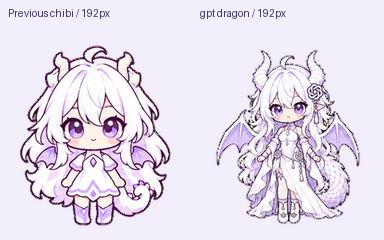
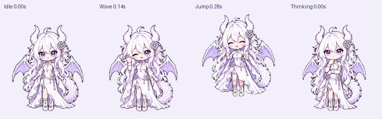
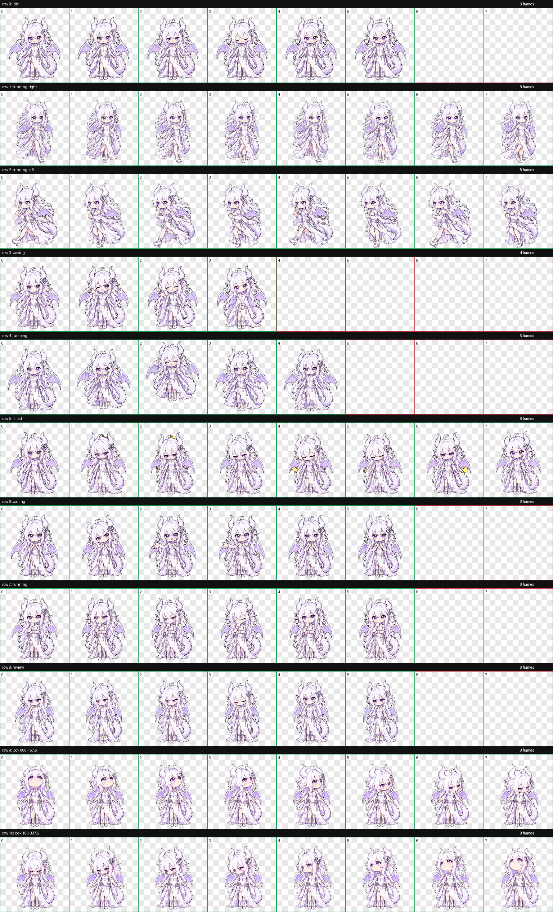
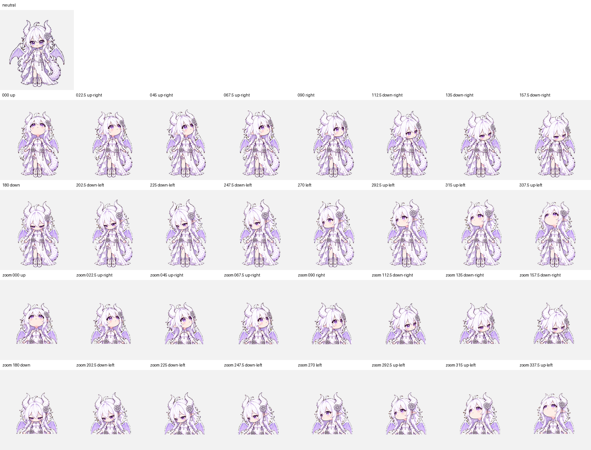

白发紫瞳、大角龙翼，保留你选定的详细造型。陪你专注，也陪你发呆。
预览使用最终精灵图，默认模拟 Pets 的像素化缩放。实际大小在「设置 → Pets → Customize → Pet size」调整；单帧固定 192 × 208，放大无法增加原始细节。“连续切换动作”会播放九种动作并穿插待机，便于检查消失、透明缺失和跳帧。
使用仓库内的本地 PNG 和原生清单安装，再到「设置 → Pets」刷新并选择「gpt龙娘」。最新复测：本地版仍会加载失败。当前账号选中条目已被迁移为云端 ID；安装目录正确，但未保持本地加载，也未修复透明故障。

左为前一版，右为本次选定版本；采用相同画格大小，保留大角、龙翼、白裙和结饰。先前短时间正常后，本地版再次出现加载失败；不能宣称已经修复。


